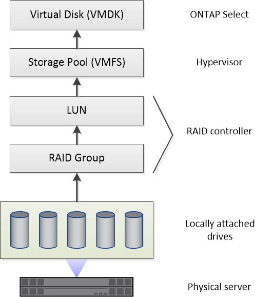
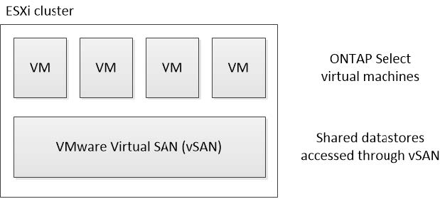
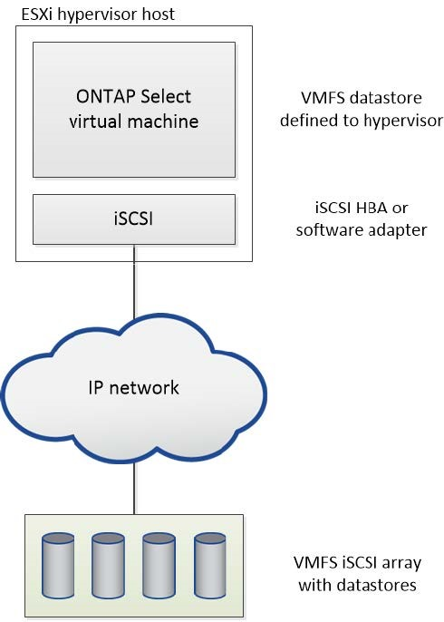
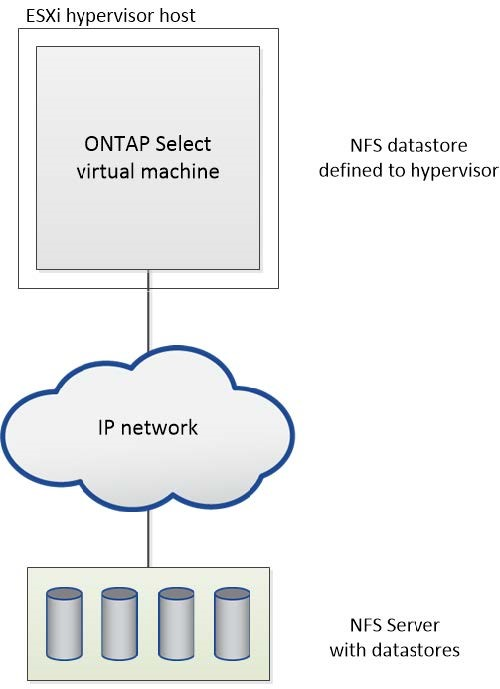

Solicitar cambios en el documento
Solicitar cambios en el documento Editar en GitHub
Editar en GitHub Guía del colaborador
Guía del colaboradorAlmacenamiento: Conceptos y características generales
Colaboradores
Descubrir conceptos generales de almacenamiento que se aplican al entorno de ONTAP Select antes de analizar los componentes de almacenamiento específicos.
Fases de la configuración del almacenamiento
Entre las principales fases de configuración del almacenamiento host de ONTAP Select se incluyen las siguientes:
-
Requisitos previos a la puesta en marcha
-
Asegúrese de que cada host del hipervisor esté configurado y listo para una puesta en marcha de ONTAP Select.
-
La configuración implica las unidades físicas, los grupos y controladoras RAID, los LUN, así como la preparación de la red relacionada.
-
Esta configuración se realiza fuera de ONTAP Select.
-
-
Configuración mediante la utilidad de administrador del hipervisor
-
Es posible configurar ciertos aspectos del almacenamiento mediante la utilidad de administración del hipervisor (por ejemplo, vSphere en un entorno VMware).
-
Esta configuración se realiza fuera de ONTAP Select.
-
-
Configuración mediante la utilidad de administración de implementación de ONTAP Select
-
Puede utilizar la utilidad de administración Deploy para configurar las construcciones centrales de almacenamiento lógico.
-
Esto se realiza de forma explícita a través de comandos de la CLI o de forma automática mediante la utilidad como parte de una implementación.
-
-
Configuración posterior a la puesta en marcha
-
Después de que finalice la implementación de ONTAP Select, puede configurar el clúster con la interfaz de línea de comandos de ONTAP o System Manager.
-
Esta configuración se realiza fuera de la puesta en marcha de ONTAP Select.
-
Almacenamiento gestionado frente a no gestionado
El almacenamiento al que accede y que controla directamente ONTAP Select es un almacenamiento gestionado. Cualquier otro sistema de almacenamiento del mismo host del hipervisor es almacenamiento no administrado.
Almacenamiento físico homogéneo
Todas las unidades físicas que conforman el almacenamiento gestionado de ONTAP Select deben ser homogéneas. Es decir, todo el hardware debe ser el mismo con respecto a las siguientes características:
-
TIPO (SAS, NL-SAS, SATA, SSD)
-
Velocidad (RPM)
Ilustración del entorno de almacenamiento local
Cada host del hipervisor contiene discos locales y otros componentes de almacenamiento lógicos que ONTAP Select puede utilizar. Estos componentes de almacenamiento se organizan en una estructura por capas, a partir del disco físico.

Características de los componentes de almacenamiento local
Existen varios conceptos que se aplican a los componentes de almacenamiento local que se utilizan en un entorno de ONTAP Select. Debe conocer estos conceptos antes de preparar una implementación de ONTAP Select. Estos conceptos se organizan de acuerdo con la categoría: Grupos RAID y LUN, pools de almacenamiento y discos virtuales.
Agrupación de unidades físicas en grupos RAID y LUN
Uno o más discos físicos pueden conectarse de forma local al servidor host y estar disponibles para ONTAP Select. Los discos físicos se asignan a grupos RAID, que luego se presentan al sistema operativo del host del hipervisor como uno o más LUN. Cada LUN se presenta al sistema operativo host del hipervisor como una unidad de disco duro física.
Al configurar un host ONTAP Select, debe tener en cuenta lo siguiente:
-
Todos los almacenamientos gestionados deben ser accesibles a través de una única controladora RAID
-
En función del proveedor, cada controladora RAID admite un número máximo de unidades por grupo RAID
Uno o más grupos RAID
Cada host ONTAP Select debe tener una sola controladora RAID. Debe crear un solo grupo RAID para ONTAP Select. Sin embargo, en determinadas situaciones puede considerar la creación de más de un grupo RAID. Consulte "Resumen de las mejores prácticas".
Consideraciones sobre el pool de almacenamiento
Existen varios problemas relacionados con los pools de almacenamiento que se deben conocer como parte de la preparación para la implementación de ONTAP Select.

|
En un entorno VMware, un pool de almacenamiento es sinónimo de un almacén de datos VMware. |
Pools de almacenamiento y LUN
Cada LUN se considera un disco local en el host del hipervisor y puede formar parte de un pool de almacenamiento. Cada pool de almacenamiento se formatea con un sistema de archivos que puede utilizar el sistema operativo del host del hipervisor.
Debe asegurarse de que los pools de almacenamiento se creen correctamente como parte de una implementación de ONTAP Select. Se puede crear un pool de almacenamiento con la herramienta de administración del hipervisor. Por ejemplo, con VMware puede usar el cliente vSphere para crear un pool de almacenamiento. El pool de almacenamiento pasa luego a la utilidad de administración de ONTAP Select Deploy.
Gestión de los discos virtuales
Existen varios problemas relacionados con los discos virtuales que se deben conocer como parte de la preparación para la implementación de ONTAP Select.
Discos virtuales y sistemas de archivos
La máquina virtual ONTAP Select tiene asignadas varias unidades de disco virtual. Cada disco virtual es realmente un archivo contenido en un pool de almacenamiento y se mantiene mediante el hipervisor. ONTAP Select usa varios tipos de discos, principalmente discos de sistema y discos de datos.
También debe tener en cuenta lo siguiente sobre los discos virtuales:
-
El pool de almacenamiento debe estar disponible para poder crear los discos virtuales.
-
No se pueden crear los discos virtuales antes de crear la máquina virtual.
-
Debe confiar en la utilidad de administración ONTAP Select Deploy para crear todos los discos virtuales (es decir, un administrador nunca debe crear un disco virtual fuera de la utilidad de implementación).
Configuración de los discos virtuales
ONTAP Select gestiona los discos virtuales. Se crean automáticamente cuando se crea un clúster con la utilidad de administración Deploy.
Ilustración del entorno de almacenamiento externo
La solución vNAS de ONTAP Select permite a ONTAP Select utilizar almacenes de datos que residen en un almacenamiento externo al host del hipervisor. Se puede acceder a los almacenes de datos a través de la red mediante VMware VSAN o directamente en una cabina de almacenamiento externa.
ONTAP Select puede configurarse para utilizar los siguientes tipos de almacenes de datos de red VMware ESXi externos al host del hipervisor:
-
VSAN (SAN virtual)
-
VMFS
-
NFS
Almacenes de datos VSAN
Cada host ESXi puede tener uno o más almacenes de datos VMFS locales. Por lo general, estos almacenes de datos solo son accesibles para el host local. Sin embargo, VMware VSAN permite que cada uno de los hosts de un clúster ESXi comparta todos los almacenes de datos del clúster como si fueran locales. En la siguiente figura, se ilustra cómo VSAN crea un pool de almacenes de datos que están compartidos entre los hosts del clúster ESXi.

Almacén de datos VMFS en cabina de almacenamiento externa
Es posible crear un almacén de datos VMFS que reside en una cabina de almacenamiento externa. Se accede al almacenamiento por medio de uno de los distintos protocolos de red. En la siguiente figura, se muestra un almacén de datos VMFS en una cabina de almacenamiento externa a la que se accede mediante el protocolo iSCSI.
|
|
ONTAP Select admite todas las cabinas de almacenamiento externo descritas en la guía de compatibilidad de almacenamiento/SAN de VMware, incluidos iSCSI, Fibre Channel y Fibre Channel sobre Ethernet. |

Almacén de datos NFS en cabina de almacenamiento externa
Es posible crear un almacén de datos NFS que reside en una cabina de almacenamiento externa. Se accede al almacenamiento por medio del protocolo de red NFS. La siguiente figura muestra un almacén de datos NFS en un sistema de almacenamiento externo al que se accede mediante el dispositivo de servidor NFS.
